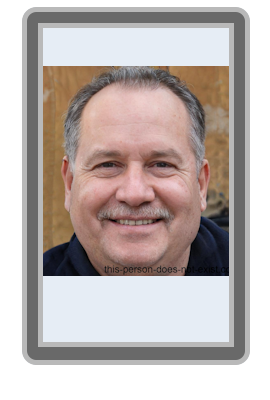

Melon Bereal Musk naît le 19 Août 1986 dans le désert du Névada, aux États-Unis. Il grandit dans un environnement stimulant auprès de son père Girrol Musk (un ingénieur en systèmes d'irrigation) et de sa mère Mayo Musk (une nutritionniste célèbre pour ses régimes à base de pépins).
Surdoué, il aurait appris à coder un algorithme de tri de pastèques à l'âge de 9 ans. Ses études sont marquées par un passage éclair dans une université prestigieuse où il fut renvoyé après avoir tenté de remplacer la fontaine d'eau du campus par un distributeur de jus de melon pressurisé.
Jusqu'en 2025, Melon Musk enchaîne les échecs commerciaux, dont la célèbre "Bereal-Box", un carton vide censé capturer l'instant présent. En Février 2025, il fonde Melon Corporation avec l'ambition de dominer le marché européen des fruits et légumes.
En 2036, il devient l'investisseur providentiel de SkyMotors Company, affirmant que les voitures de Gabriel Frouard sont "aussi magnifiques que ses fruits". Il a notamment influencé la création du modèle "FruityMelon", une voiture dont le carburant est extrait de la fermentation de melons invendus.
| Année | Patrimoine (en Milliards de $) | Source principale |
|---|---|---|
| 2025 | 0.0004$ | Vente de melons à l'unité au bord de la route. |
| 2036 | 142$ | Monopole européen sur le melon "Cyber-Crunch". |
| 2045 | [CALCUL EN COURS] | Actions SkyMotors et brevets sur les fruits connectés. |
Melon Musk prône une idéologie radicale appelée le Melonisme : selon lui, l'humanité doit devenir "multi-planétaire" non pas pour survivre, mais pour trouver de nouveaux sols arables sur Mars, car la terre sature de tomates.
Sur le plan politique, il soutient toute législation visant à remplacer les feux de signalisation par des hologrammes de fruits, arguant que cela réduirait le stress des conducteurs de SkyMotors.
Peu avant la gloire, Melon a perdu un bras lors d'un accident impliquant une moissonneuse-batteuse expérimentale pilotée par une IA défaillante. Cet incident a failli ruiner sa réputation. Plus tard, il a été poursuivi par la Commission de Sécurité Alimentaire pour avoir injecté de la connectivité Wi-Fi dans ses melons, ce qui permettait aux fruits de "tweeter" leur taux de sucre en temps réel depuis le réfrigérateur des clients.
Melon Musk est le père de trois enfants aux noms révolutionnaires : Sirop Musk, Gluten Musk et le mystérieux E-treize Musk (dont le nom serait en réalité le code source d'un GPS). Il vit actuellement dans une serre géante au Névada, où il dormirait sur un lit de feuilles de menthe pour "rester frais".
"Certains veulent conquérir Mars avec des fusées. Moi, je vais la coloniser avec des pépins." - Melon Musk, Conférence MelonCorp 2040.